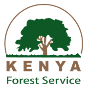
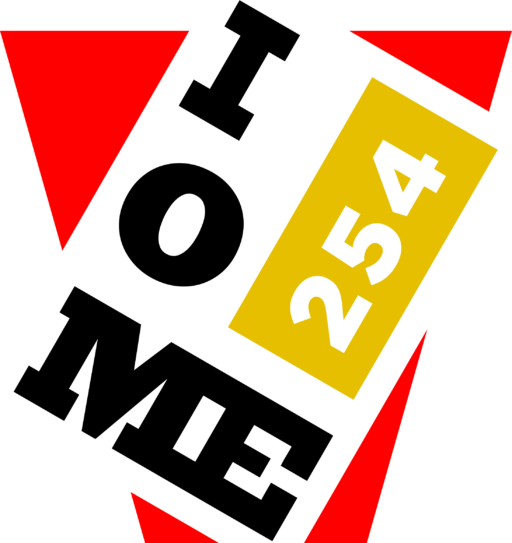

Dr. Amina Njeri
Chief Executive Officer
Leads global partnerships, program strategy and long-term biodiversity finance for regional conservation expansion.

The ECO GROW corporate framework unites mission-driven leadership with Kenyan strategic partners to deliver sustained biodiversity recovery, habitat resilience, and climate-smart stewardship.
ECO GROW is a global biodiversity stewardship organization operating at the intersection of science, community partnership and practical environmental governance. Our corporate mandate centers on equitable conservation, climate resilience, and operational transparency across local and international initiatives.

Chief Executive Officer
Leads global partnerships, program strategy and long-term biodiversity finance for regional conservation expansion.

Director of Field Operations
Oversees implementation across field sites, Kenyan operations and cross-border ecological restoration teams.

Chief Science Officer
Directs scientific impact studies, species recovery models, and evidence-based monitoring systems.
Mobilizes logistics, emergency response and community resilience support where conservation intersects humanitarian need.

Partners on reforestation, habitat protection, forest patrol capacity building and sustainable agroforestry planning.

Supports local science communication, environmental education and citizen-led water stewardship across Kenyan landscapes.
Transparent governance and advisory oversight ensure all contributions are aligned with measurable biodiversity outcomes and local social safeguards.
Kenyan partnership channels support land rights, forest management and community-led conservation coordination across high-priority corridors.
Our corporate investment platform funds long-term monitoring, applied research projects and climate-adaptive habitat restoration studies.